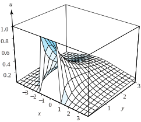

at each point \(w=u+iv\) in \(G\text{.}\) If \(w=f(z)=u(x,y)+iv(x,y)\) is a conformal mapping from a domain \(D\) in the \(z\) plane onto \(G\text{,}\) then the composition
Equations (10.2.1) and (10.2.3) are Laplace’s equations for the harmonic functions \(\Phi\) and \(\phi\text{,}\) respectively (see Section 3.3). A direct proof that the function \(\phi\) in Equation (10.2.2) is harmonic would involve a tedious calculation of the partial derivatives \(\phi_{xx}\) and \(\phi_{yy}\text{.}\) An easier proof involves the use of a complex variable technique. We assume that there is a harmonic conjugate \(\Psi(u,v)\) so that the function
is analytic in a neighborhood of the point \(w_0=f(z_0)\text{.}\) Then the composition \(h(z) =g\big(f(z)\big)\) is analytic in a neighborhood of \(z_0\) and can be written
Recall (Theorem 3.3.1) that the real part of the analytic function \(h(z)\) is harmonic, so \(\Phi\big(u(x,y), \, v(x,y)\big)\) is harmonic in a neighborhood of \(z_0\text{.}\)
Example10.2.2.
Show that \(\phi(x,y) = \mathrm{Arctan}(\frac{2x}{x^2+y^2-1})\) is harmonic in the disk \(|z|\lt 1\text{.}\)
Solution.
A straightforward use of the techniques in Chapter 9 will show that
is a conformal mapping of the disk \(|z|\lt 1\) onto the right half-plane Re\((w)>0\text{.}\) The results from Exercise b, Section 5.2, show that the function
Substituting these equations into the formula for \(\Phi(u,v)\) and using Equation (10.2.2) reveals that \(\phi(x,y) = \mathrm{Arctan}\big(\frac{v(x,y)}{u(x,y)}\big) = \mathrm{Arctan}(\frac{2x}{x^2+y^2-1})\) is harmonic for \(|z|\lt 1\text{.}\)
Let \(D\) be a domain whose boundary is made up of piecewise smooth contours joined end to end. The Dirichlet problem is to find a function \(\phi\) that is harmonic in \(D\) such that \(\phi\) takes on prescribed values at points on the boundary. Let’s first look at this problem in the upper half-plane.
is analytic in the upper half-plane \(\mathrm{Im}(w) >0\text{,}\) and its imaginary part is the harmonic function \(\frac{1}{\pi}\mathrm{Arg}(w-u_0)\text{.}\)
Remark10.2.4.
Let \(t\) be a real number. The convention \(\mathrm{Arctan}(\pm \infty) = \pm\frac{\pi}{2}\) allows \(\mathrm{Arctan}(t)\) to denote the branch of the inverse tangent with range in \(-\frac{\pi}{2} \lt \mathrm{Arctan}(t)\lt \frac{\pi}{2}\text{.}\) With that understanding we can write the solution given in Equation (10.2.4) as \(\Phi(u,v) =\frac{1}{\pi}\mathrm{Arctan}(\frac{v}{u-u_0})\text{.}\)
Theorem10.2.5.$N$-value Dirichlet problem for the upper half-plane.
Let \(u_1 \lt u_2 \lt \cdots \lt u_{N-1}\) denote \(N-1\) real constants. The function
Figure10.2.6.The boundary conditions for the harmonic function \(\Phi(u,v)\)
Proof.
Each term in the sum in Equation (10.2.5) is harmonic, so it follows that \(\Phi\) is harmonic for \(\mathrm{Im}(w)>0\text{.}\) To show that \(\Phi\) has the prescribed boundary conditions, we fix \(j\) and let \(u_j \lt u \lt u_{j+1}\text{.}\) Using Example 10.2.3, we get
\begin{align*}
\frac{1}{\pi}\mathrm{Arg}(u-u_k) \amp = 0, \text{ if } k \le j, \text{ and }\\
\frac{1}{\pi}\mathrm{Arg}(u-u_k) \amp = 1, \text{ if } k > j\text{.}
\end{align*}
You can verify that the boundary conditions are correct for \(u\lt u_1\) and \(u>u_{N-1}\) to complete the proof.
Example10.2.7.
Find the function \(\phi(x,y)\) that is harmonic in the upper half-plane Im\((z) >0\) and takes on the boundary values indicated in Figure 10.2.8.
Solution.
This is a four-value Dirichlet problem in the upper half-plane defined by \(\mathrm{Im}(z)>0\text{.}\) For the \(z\) plane, the solution in Equation (10.2.5) becomes
Here we have \(a_0=4\text{,}\)\(a_1=1\text{,}\)\(a_2=3\text{,}\) and \(a_3=2\) and \(x_1=-1\text{,}\)\(x_2=0\text{,}\) and \(x_3=1\text{,}\) which we substitute into equation for \(\phi\) to obtain
A three-dimensional graph of \(u=\phi(x,y)\) is shown in Figure 10.2.10.

Figure10.2.10.\(\phi(x,y)\) with boundary values \(\phi(x,0)=1\) for \(|x|\lt 1\text{,}\) and \(\phi(x,0)=0\) for \(|x|>1\)
We now state the \(N\)-value Dirichlet problem for a simply connected domain. We let \(D\) be a simply connected domain bounded by the simple closed contour \(C\) and let \(z_1,\,z_2,\,.\,.\,.\,,\,z_N\) denote \(N\) points that lie along \(C\) in this specified order as \(C\) is traversed in the positive direction (counterclockwise). Then we let \(C_k\) denote the portion of \(C\) that lies strictly between \(z_k\) and \(z_{k+1}\text{,}\) for \(k=1, \, 2, \ldots, N-1\text{,}\) and let \(C_N\) denote the portion that lies strictly between \(z_N\) and \(z_1\text{.}\) Finally, we let \(a_1, \, a_2, \ldots,
a_N\) be real constants. We want to find a function \(\phi(x,y)\) that is harmonic in \(D\) and continuous on \(D\cup C_1\cup C_2\cup \cdots \cup C_N\) that takes on the boundary values
\begin{align}
\phi(x,y) \amp = a_1, \text{ for } z=x+iy \text{ on } C_1;\tag{10.2.6}\\
\phi(x,y) \amp = a_2, \text{ for } z=x+iy \text{ on } C_2;\notag\\
\amp \;\; \vdots\notag\\
\phi(x,y) \amp = a_N, \text{ for } z=x+iy \text{ on } C_N\text{.}\notag
\end{align}
Figure10.2.11.The boundary values for \(\phi(x,y)\) for the Dirichlet problem in the simply connected domain \(D\)
One method for finding \(\phi\) is to find a conformal mapping
\begin{equation}
w = f(z) = u(x,y) + iv(x,y)\tag{10.2.7}
\end{equation}
of \(D\) onto the upper half-plane \(\mathrm{Im}(w)>0\text{,}\) such that the \(N\) points \(z_1, \, z_2, \ldots,z_N\) are mapped onto the points \(u_k=f(z_k)\text{,}\) for \(k=1, \, 2, \ldots,N-1\text{,}\) and \(z_N\) is mapped onto \(u_N=+\infty\) along the \(u\) axis in the \(w\) plane.
When we use Theorem 10.2.1, the mapping in Equation (10.2.7) gives rise to a new \(N\)-value Dirichlet problem in the upper half-plane \(\mathrm{Im} (w) >0\) for which Theorem 10.2.5 gives the solution. If we set \(a_0=a_N\text{,}\) then the solution to the Dirichlet problem in \(D\) with the boundary values from Equation (10.2.6) is
This method relies on our ability to construct a conformal mapping from \(D\) onto the upper half-plane \(\mathrm{Im}(w) >0\text{.}\)Theorem 9.4.7 guarantees the existence of such a conformal mapping.
Example10.2.12.
Find a function \(\phi(x,y)\) that is harmonic in the unit disk \(|z|\lt 1\) and takes on the boundary values
is a one-to-one conformal mapping of the unit disk \(|z|\lt 1\) onto the upper half-plane \(\mathrm{Im}(w)>0\text{.}\)Equation (10.2.9) reveals that the points \(z=x+iy\) lying on the upper semicircle \(y>0, \, 1-x^2-y^2=0\) are mapped onto the positive \(u\) axis. Similarly, the lower semicircle is mapped onto the negative \(u\) axis, as shown in Figure 10.2.13. The mapping given by Equation (10.2.9) gives rise to a new Dirichlet problem of finding a harmonic function \(\Phi(u,v)\) that has the boundary values
\begin{equation*}
\Phi(u,0) = 0, \text{ for } u>0, \text{ and } \Phi(u,0) =1, \text{ for } u \lt 0\text{,}
\end{equation*}
Figure10.2.13.The Dirichlet problems for \(|z|\lt 1\) and \(\mathrm{Im}(w) >0\)
Example10.2.14.
Find a function \(\phi(x,y)\) that is harmonic in the upper half-disk defined by \(H=\{z=x+iy:y>0,\,|z|\lt 1\}\) and takes on the boundary values
\begin{align*}
\phi(x,y) \amp = 0, \text{ for } x + iy = e^{i\theta}, 0\lt \theta \lt \pi;\\
\phi(x,0) \amp = 1, \text{ for } -1 \lt x \lt 1\text{.}
\end{align*}
Solution.
When we use the result of Exercise 9.2.1.4, Section 9.2, the function in Equation (10.2.9) maps the upper half-disk \(H\) onto the first quadrant \(Q:u>0,\,v>0\text{.}\) The conformal mapping given in Equation (10.2.9) maps the points \(z=x+iy\) that lie on the segment \(y=0, \,-1 \lt x \lt 1\) onto the positive \(v\) axis.
Equation (10.2.9) gives rise to a new Dirichlet problem of finding a harmonic function \(\Phi(u,v)\) in \(Q\) that has the boundary values
\begin{equation*}
\Phi(u,0) = 0, \text{ for } u > 0, \text{ and } \Phi(0,v)=1, \text{ for } v>0\text{,}
\end{equation*}
as shown in Figure 10.2.15. In this case, the method in Example 10.1.3 can be used to show that \(\Phi(u,v)\) is given by
maps the quarter-disk onto the upper half-disk \(H=\{w=u+iv :v>0, \, |w| \lt 1\}\text{.}\) The new Dirichlet problem in \(H\) is shown in Figure 10.2.18. From the result of Example 10.2.14 the solution \(\Phi(u,v)\) in \(H\) is
Figure10.2.18.The Dirichlet problems for the domains \(G\) and \(H\)
Using Equation (10.2.10), we can show that \(u^2+v^2=(x^2+y^2)^2\) and \(2v=4xy\text{,}\) which we use in Equation (10.2.11) to construct the solution \(\phi\) in \(G\text{:}\)
Find the function \(\phi(x,y)\) that is harmonic in the portion of the upper half-plane \(\mathrm{Im}(z) >0\) that lies outside the circle \(|z|=1\) and has the boundary values